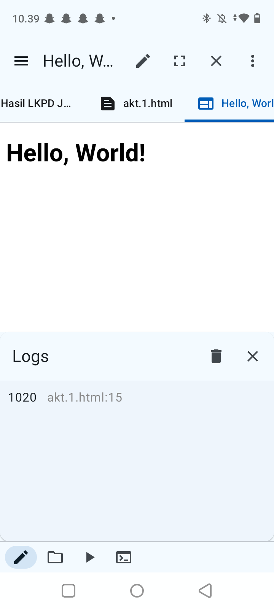
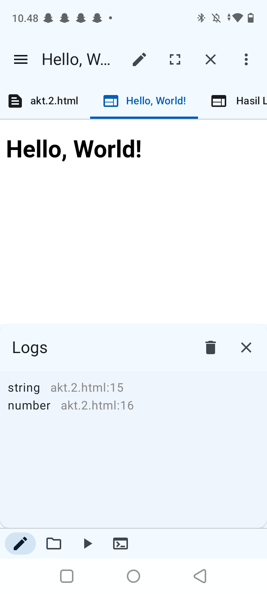
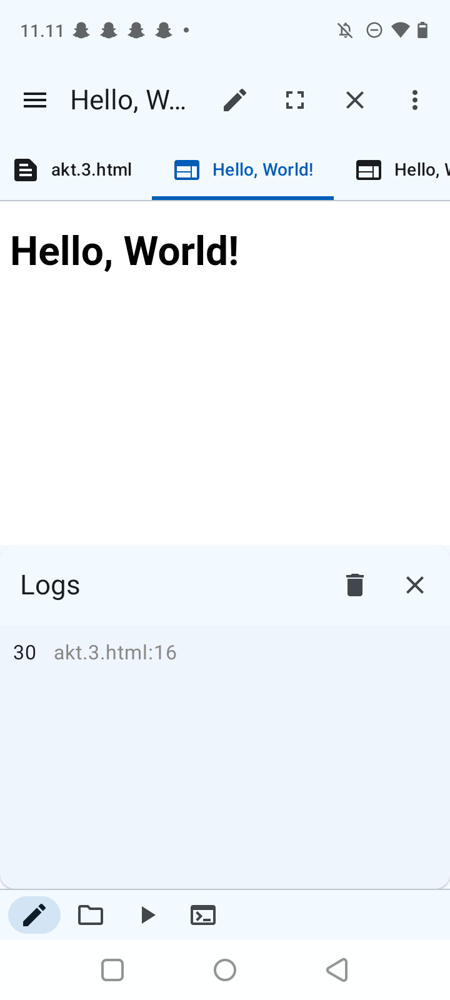
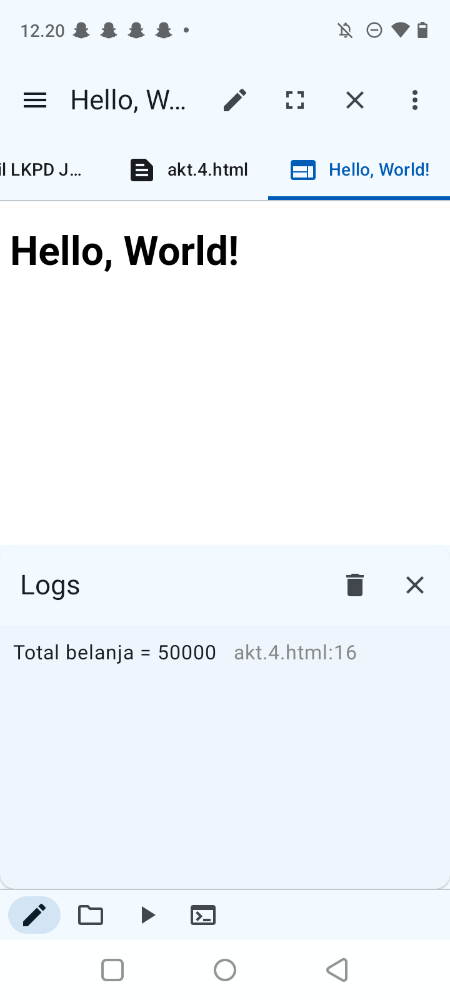
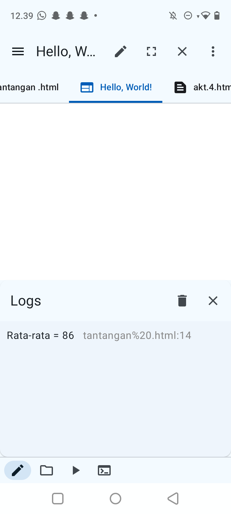

A. TUJUAN PEMBELAJARAN
Setelah menyelesaikan LKPD ini, peserta didik mampu:
- Membedakan String dan Number.
- Menjelaskan bahwa
prompt()menghasilkan String. - Menggunakan
Number()danString(). - Menganalisis kesalahan akibat tipe data.
- Membuat program input dan perhitungan sederhana.
B. PETUNJUK KERJA
- Kerjakan mandiri terlebih dahulu.
- Diskusikan melalui Think Pair Share.
C. AKTIVITAS 1
Prediksi hasil sebelum menjalankan kode. Jalankan kode dan amati. Simpan file sebagai lkpd_string_number_naila.js.
EKSPERIMEN 10 + 20
Jangan jalankan terlebih dahulu. Prediksikan hasil:
let a = "10"; let b = "20"; console.log(a + b);
- Apa output program? Outputnya adalah
1020. - Mengapa hasil tersebut terjadi? Karena variabel
adanbberisi nilai bertipe String (ditandai dengan tanda petik). Operator+pada String berfungsi untuk penggabungan teks (konkatenasi), bukan penjumlahan matematika. - Apakah a dan b bertipe Number? Tidak, variabel
adanbbertipe String.
Uji sekarang. Apakah prediksimu benar? Jelaskan.
Ya, prediksi benar. Saat kode dijalankan di konsol JavaScript, hasilnya adalah "1020" karena sistem menggabungkan dua teks tersebut secara berurutan.

D. AKTIVITAS 2 - MENEMUKAN TIPE DATA
Jalankan kode berikut:
let nama = "Asep"; let umur = 16; console.log(typeof nama); console.log(typeof umur);
| Variabel | Prediksi | Hasil typeof |
Kesimpulan |
|---|---|---|---|
nama |
string | string | Nilai di dalam tanda petik dibaca sebagai teks. |
umur |
number | number | Nilai berupa angka tanpa tanda petik dibaca sebagai angka numerik. |
String adalah tipe data berupa karakter/teks yang diapit tanda petik, digunakan untuk menampilkan tulisan atau penggabungan karakter. Sedangkan Number adalah tipe data berupa angka numerik tanpa tanda petik yang dapat digunakan untuk operasi aritmatika matematika (seperti penjumlahan, pengurangan, perkalian, dan pembagian).

E. AKTIVITAS 3 - KONVERSI STRING MENJADI NUMBER
Perbaiki program agar menghasilkan 30. Gunakan Number():
let a = "10"; let b = "20"; let hasil = Number(a) + Number(b); console.log(hasil);
Hasil program pada konsol adalah 30. Fungsi Number() berhasil mengonversi teks "10" menjadi angka 10 dan teks "20" menjadi angka 20, sehingga operator + melakukan penjumlahan matematika.

F. AKTIVITAS 4 - PROGRAM KASIR SEDERHANA
Buat program yang meminta harga barang dan jumlah barang melalui prompt(), mengubah keduanya menjadi Number, lalu menghitung total harga.
let harga = Number(prompt("Masukkan harga: "));
let jumlah = Number(prompt("Masukkan jumlah: "));
let total = harga * jumlah;
console.log("Total belanja = " + total);
| Input Uji | Nilai |
|---|---|
| Harga | Rp 10.000 |
| Jumlah | 5 |
| Total seharusnya | Rp 50.000 |
| Total program | Rp 50000 |

G. TANTANGAN - PROGRAM HITUNG NILAI
Buat program dengan input nilai tugas, UTS, dan UAS. Konversikan semua input menggunakan Number(), lalu hitung rata-rata dengan rumus (tugas + UTS + UAS) / 3.
- Menerima input nilai tugas dari pengguna via
prompt()dan langsung mengonversinya ke tipe data angka menggunakanNumber(). - Menerima input nilai UTS dan UAS dari pengguna via
prompt()lalu mengonversinya ke tipe data angka menggunakanNumber(). - Hitung rata-rata dengan mengoperasikan rumus
let rataRata = (tugas + uts + uas) / 3;. - Tampilkan hasil perhitungan rata-rata nilai ke layar/konsol.

H. THINK PAIR SHARE
| Pertanyaan | Jawaban |
|---|---|
Mengapa prompt() perlu dikonversi jika hasilnya ingin dihitung? |
Karena secara bawaan (default), nilai yang dikembalikan oleh fungsi prompt() selalu bertipe data String, meskipun pengguna memasukkan angka. |
Apa perbedaan "10" dengan 10? |
"10" adalah String (teks), jika dijumlahkan akan digabungkan. Sedangkan 10 adalah Number (angka), jika dijumlahkan akan dihitung nilainya. |
Apa yang terjadi jika lupa Number()? |
Operasi penjumlahan akan menghasilkan penggabungan teks (konkatenasi) bukan hasil matematis. Misalnya input 10 dan 20 akan menjadi "1020". |
Pair: Bandingkan jawaban dengan teman. Apakah sama? Mengapa bisa berbeda?
Jawaban sebagian besar sama pada inti teorinya, perbedaannya hanya terletak pada susunan kalimat penjelasan masing-masing.
Share: Sampaikan satu temuan penting kepada kelas.
Temuan penting: Semua data input yang diambil menggunakan prompt() wajib diubah terlebih dahulu dengan Number() jika hendak dilakukan operasi aritmatika (terutama penjumlahan) agar tidak terjadi kesalahan logika program.
I. REFLEKSI 3-2-1
3 hal yang saya pahami:
- Perbedaan antara tipe data String (teks) dan Number (angka).
- Sifat fungsi
prompt()yang selalu menghasilkan data bertipe String. - Cara melakukan konversi tipe data String ke Number menggunakan fungsi
Number().
2 hal yang masih membingungkan:
- bagaimana jika isi dari variabel di kosongkan?
- Bagaimana cara memformat angka hasil perhitungan agar otomatis memiliki desimal atau format mata uang Rupiah.
1 hal yang ingin saya coba pada program berikutnya:
Membuat aplikasi kalkulator interaktif sederhana dengan antarmuka berbasis HTML.
J. PENILAIAN DIRI
| Pernyataan | Ya | Belum |
|---|---|---|
| Saya dapat membedakan String dan Number. | ✓ | |
| Saya memahami prompt() menghasilkan String. | ✓ | |
| Saya dapat menggunakan Number(). | ✓ | |
| Saya dapat menggunakan String(). | ✓ | |
| Saya dapat menemukan kesalahan tipe data. | ✓ | |
| Saya dapat membuat program input dan hitung sederhana. | ✓ |
K. RUBRIK PENILAIAN PRAKTIK
| Aspek | 4 - Sangat Baik | 3 - Baik | 2 - Cukup | 1 - Perlu Bimbingan |
|---|---|---|---|---|
| Tipe data | Dapat membedakan String/Number dan menjelaskan detail. | Dapat membedakan String/Number. | Masih ada kekeliruan. | Belum memahami. |
| Konversi | Tepat dan mandiri. | Benar dengan sedikit arahan. | Beberapa kesalahan. | Belum mampu. |
| Program | Berjalan benar dan rapi. | Sedikit kesalahan. | Berjalan sebagian. | Belum berjalan. |
| Pemecahan masalah | Menemukan dan memperbaiki mandiri. | Memperbaiki dengan sedikit bantuan. | Banyak bantuan. | Belum mampu. |